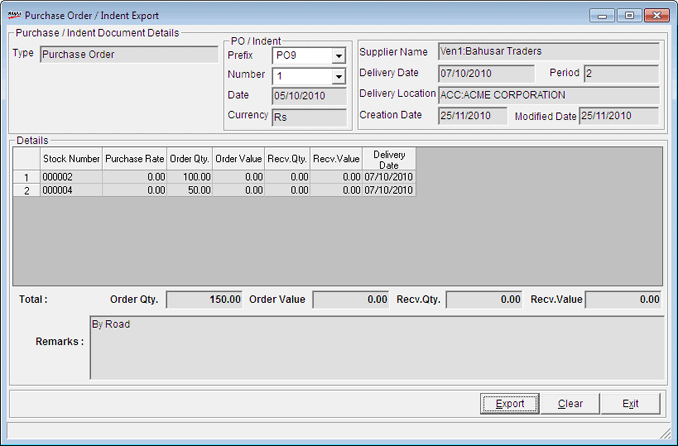

This option is used to create an .xml file for a purchase order to be sent to a distributor. The same can be imported by the distributor to enable him to service the order.
How to reach: Stock > Purchase Order > Export
The Purchase Order/ Indent Export window is displayed.

Enter the document prefix and the document number of the indent or purchase order. All the fields pertaining to that document are populated in the window.
Note:
When a purchase order is exported the output file name is in the pattern POExp_scc_xxxn.xml (where scc = Shoper company code, xxx is the PO document prefix and n is the PO number).
The only change in the naming convention of the exported file for indent is IND and for purchase order is PO.
The output file is created in the Shoper-Out directory.